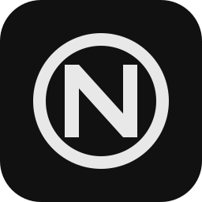

Minimal Onion Browser over Tor
NiOn is a small, fast Linux browser that routes every request — ordinary websites and .onion sites alike — through its own bundled Tor runtime. No system Tor to install, no proxy to configure, nothing extra to trust: launch NiOn and browse, knowing the connection is Tor.
It is fail-closed by design. The instant Tor cannot start or drops, NiOn stops loading pages and shows you what went wrong — it never silently falls back to a direct connection. Even when something breaks, your traffic cannot quietly leak around the Tor network.
And it stays minimal on purpose: no accounts, no cloud sync, no telemetry, no extension engine. Just the essentials — tabs, bookmarks, downloads, find in page, print — plus a clean Private Window that keeps no trace of where you went.
NiOn 2.0.0 is a maintenance & architecture release: the codebase was rebuilt into focused, auditable modules with the same security invariants. Same clean browser, cleaner engine underneath.
Linux x86_64 · AppImage · GPL-3.0-or-later
sha256sum -c